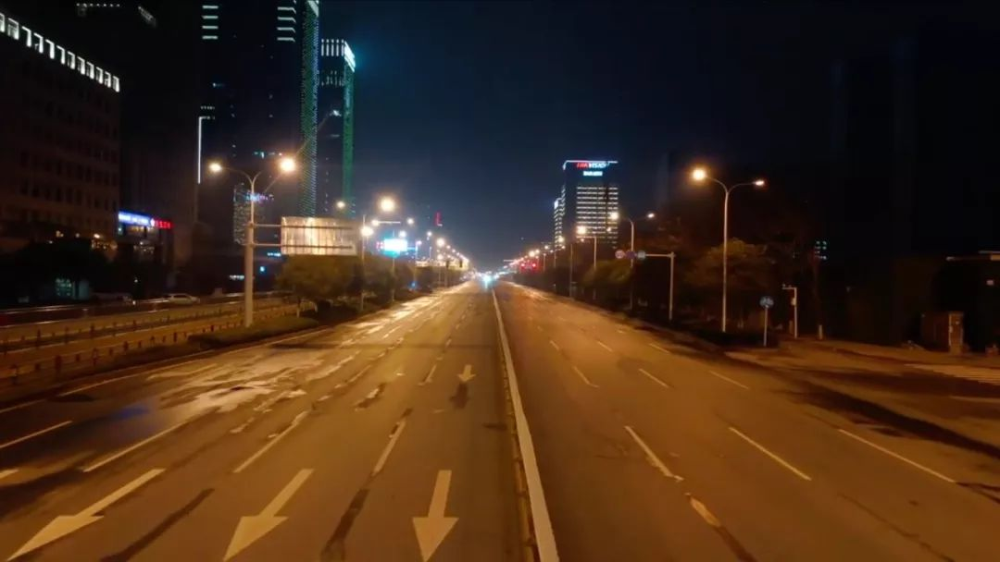
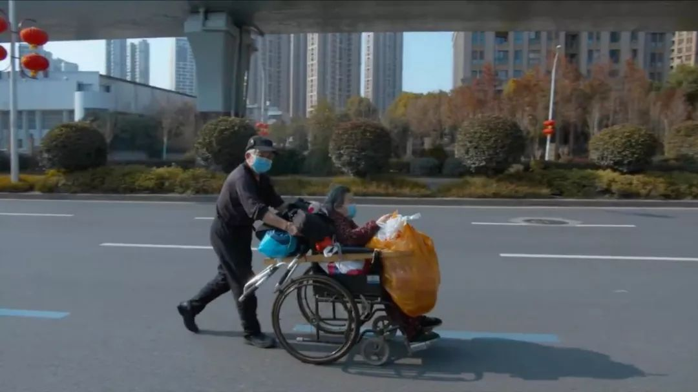
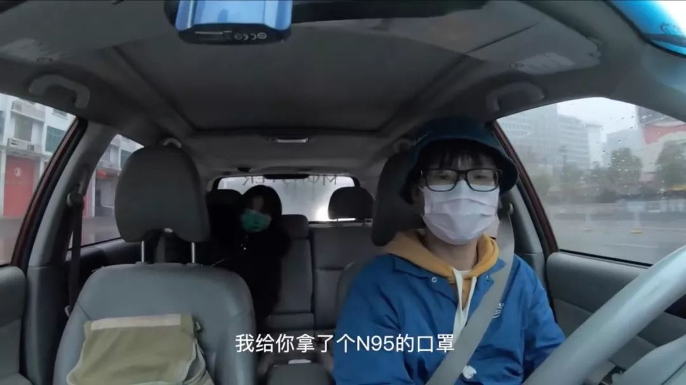
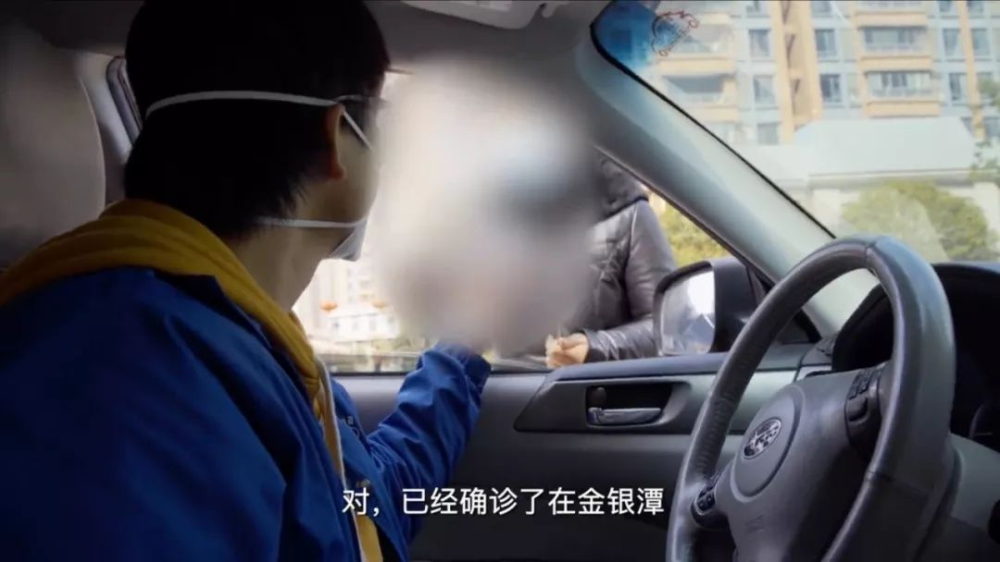

***
***穿梭在疫区的摆渡人：武汉的每个人都在努力
原文链接 备份链接 疫情爆发以来，武汉市公交、地铁系统相继停运，加之私家车禁行，这座一千万人口的巨型城市，在短时间内，迅速从喧嚣中沉寂下来。曾经繁华、拥堵的武汉街头，如今显得空荡而寂寥。 但仍有一群人活跃在武汉的路面上，他们穿上全身防护 …
***** *****
*****
***** “在瘟疫面前，感谢你让我们看到了人性中的美好和善良”，“你让我们看到了一个真实的武汉。”评论中出现最多的字眼就是“真实”。*****

武汉晚上七点，空旷的街道，时不时有120急救车疾驰而过。
文 | 新京报记者 解蕾
编辑｜胡杰 校对 | 李立军
►本文约4347字，阅读全文约需8分钟
蜘蛛猴面包，一个最近总是出现在网络热搜上的名字。
这个名字来源于之前乐队朋友对他的称呼，或许是受《小王子》的影响，加上旅行中曾遇到的猴面包树，后来有一次改网名的时候，他脑子里突然就蹦出来蜘蛛猴面包这几个字。
蜘蛛原本是个自由影视工作者，因为拍摄肺炎时期的武汉日记，短短十几天内，他的微博粉丝从1万多涨到了230多万。纪实视频从《武汉封城日记》更名为《武汉日记2020》，如今已经更新到了第八集，成为许多人了解武汉当下境况的一个窗口。
视频也同步上传到了youtube，受到不少海内外网友的关注。有澳洲、奥地利、加拿大、印尼侨胞的问候，有用韩语写下的支持，还有许多香港台湾朋友的祝福。
“在瘟疫面前，感谢你让我们看到了人性中的美好和善良”，“你让我们看到了一个真实的武汉。”评论中出现最多的字眼就是“真实”。
在蜘蛛的镜头里，有拿着行李箱无法回家的人迷茫在街头，有戴着口罩坚持工作的环卫工，有骑着摩托依旧在路上奔波的外卖员，有奋斗在一线的医护人员，有免费给医护人员提供住宿的酒店志愿者，也有趁着天晴出来打太极的老爷爷。
一位台湾网友留言说，疫情结束后最想做的事就是从台湾去武汉找蜘蛛猴面包先生，一起吃一顿饭，喝一杯茶，聊聊天，看看武汉美丽的风景。
回到现场丨8瓶抗艾滋药的武汉行：全国HIV感染者募捐 志愿者挨家挨户送
疫情里的温暖

2月5日，农历正月十二，武汉关闭离汉通道的第十四天，火神山医院收治了第二批新型肺炎病人。街道上人烟稀少，时不时有120急救车疾驰而过，之后，又复归长久的宁静。
十几天来，蜘蛛第一次在家给自己做了一顿像样的饭菜，腊肉泥蒿，和母亲做的味道一样。自从1月23日拍摄武汉日记开始，蜘蛛每天早出晚归，回到家剪片子经常剪到天亮，一天只吃一两顿饭。
蜘蛛从小在武汉出生长大，今年是他在这座城市生活的第三十七年。十几年来，他已经习惯了自己一个人住。去年,母亲去了澳大利亚和姐姐住在一起。今年春节，在海南的女友原本打算来武汉和蜘蛛一起生活，但突如其来的疫情和城市管控彻底打乱了这个计划。
大年二十九凌晨两点，蜘蛛还没有睡，他几乎是第一时间知道了“封城”的通告。“其实之前多少有点预感，消息出来的那一刻就觉得，事情果然还是发生了。”
蜘蛛并没有马上就决定去拍摄。“我其实心里也很慌，害怕这个时候出门会不会有风险，会不会感染这个病毒。”经过了一番犹豫挣扎，加上已经好几天没有出门。第二天早上，蜘蛛决定出门采购物资和生活用品，顺便用手边的gopro（运动摄像机）去记录这个城市。
蜘蛛说，第一天的拍摄非常小心，基本都是在车里对着外面拍，有时候甚至连窗户都没打开。就是这短短两分钟的视频，发布到网上后，迅速吸引了成千上万网友的目光。它第一时间记录下武汉封城后的景象，小雨时阴郁的天空，冷冷清清的街头，关门停业的商城，还有口罩下看不到表情的面孔。

武汉晚上七点，空旷的街道，时不时有120急救车疾驰而过，之后又复归长久的宁静。
随着出去的次数越来越多，接触到外面不同的人，蜘蛛心中的恐惧也逐渐被克服。他决定，用自己的双眼去记录并见证这座被疫情围困的城市。让外界以及武汉市内的人，来了解武汉真实的一面，消除恐慌，这是他拍摄的初衷。
在十几天的拍摄中，有一幕是令蜘蛛最难忘怀的。当时他正停下车拍摄封闭的长江隧道，就看到从远处走来了两位老人，老奶奶满头白发，戴着口罩，坐在轮椅上，腿上放着一大袋生活用品。老爷爷戴着一个棒球帽，额头有些冒汗，穿着一件棕色的针织上衫，脱掉的外套攥在推着轮椅的手里，扶手下面还绑着两个便携旅行包。宽阔的马路上没什么车，蜘蛛一眼就看到了这个推着车的身影。
他了解到，两位老人七十多岁，是从医院里出来的。奶奶患有糖尿病，大年二十八就住进了医院，每天从超市买吃的，生活上很不方便，早就想回家了，但是一直没有联系到帮助的车，子女在汉口，车也被禁行。今天他们坚持要出院，十来公里的路程，老爷爷决定用三个小时把奶奶推回家。

武汉街头，一位老人原本打算用三小时把家人用轮椅推回家。
蜘蛛遇见他们的时候，老人已经走了一个多小时，大概三分之一的路程，“快了，马上就到了，”爷爷喘着气说。
后来蜘蛛把两位老人送回了家，临走前老人戴着口罩挥手向他告别。
“这是我拍摄封城以来遇到的最动人的一幕。”蜘蛛的声音变得很温柔。
让蜘蛛感动的，还有一个叫钟丽的车队志愿者，是个年轻妈妈。家里有三个小孩，老大13岁，老三只有4岁。她每天早上安顿好三个小孩之后，大概十一点从家出发，去志愿者团队里做物资运送服务，直到晚上八九点才能回家吃上饭。
“希望武汉能够早日恢复正常状态，现在我们能尽点力就多帮助一下。现在这些物资都很难搞到的，我们就出点油钱，都不算什么。”钟丽笑着说。为了孩子，她把自己保护得也很好。
蜘蛛跟拍了她一下午，到晚上的时候，钟丽就给小孩子打电话，告诉老大说，用她出门前洗好的菜，做点面条给弟弟妹妹吃。她在电话里，一点点指导着老大怎么下面。

志愿者钟丽给孩子打电话，指导老大做面条给弟弟妹妹。
后来在视频聊天的时候，蜘蛛看到，孩子们自己在家玩得很开心，面条也都吃光了。钟丽看着手机屏幕，笑出了眼泪。她说，她会一直做志愿者，直到武汉再也没有人戴口罩为止。
“那一瞬间我就觉得特别感人，很平淡，却很戳心。”蜘蛛说。
从记录者到志愿者
**
作为一个影视工作者，蜘蛛的主要任务是客观的拍摄和记录。但随着看到的人和事越来越多，在这样一个所有人都在互帮互助的大环境之下，蜘蛛也深受感染，希望力所能及地去做点什么。“现在这个城封了，相当于整个城的人就是一个命运共同体，所有人都要一起去对抗疫情。”
回到现场丨武汉“医生驿站”的困境：消毒水等物资短缺 民间物资车辆进城受阻。
他加入了开车接送医护人员上下班的志愿者群。大年三十，他早上七点多起床，戴着一次性医用口罩， 接到了一个五官科的大夫，大夫拎着一个塑料袋上了车，说全部医护人员的春节假期都取消了，“我们都是带着泡面去吃年夜饭的。”
医护人员告诉他，他们也感受到很多的温暖。一个同事说她需要N95口罩，邻居就把自己仅有的几个送给了她。还有同事说她需要护目镜，第二天就有人把泳镜挂到了门上。
一位医护人员在下车的时候送给蜘蛛一个N95口罩，“我们科室用的都是医用外科口罩，你这么辛苦，还是要用这个。”

一位医护人员在下车的时候送给蜘蛛一个N95口罩。
每个医护人员下车之后，蜘蛛都会用酒精喷在座位上消毒，然后用纸擦拭。网友们特地在评论里告诉他，要等酒精挥发才更有效，还让蜘蛛戴上手套，把口罩上边的铁丝按紧、压住鼻梁。
蜘蛛说，还有很多人说要送口罩给自己。他收到了Chinese Footblall 乐队主唱送的口罩，在第三集片尾，他插入了Chinese Footblall 乐队为武汉创作的歌曲，“人们啊满怀希望，黑暗另一端的模样，会有生活的远方。”
蜘蛛还参与了为患者送药的行动。那一批药物是在卫健委第四批与第五批治疗方案里提到的克力芝，原本是一种治疗艾滋病的抗病毒药物。一个网名叫HIV松鼠哥的人，一直在义务做艾滋病药物的收集与分发工作。
松鼠哥看到蜘蛛的视频之后，出于信任，通过朋友联系到他帮忙为患者送药。这是蜘蛛第一次与患者或患者家属接触，在当下特殊时期，这是一件比较困难的事情。蜘蛛会打电话约好时间，把药放到一个指定地点，然后看着患者拿到药后再离开。
蜘蛛开车为患者分发药物。
在送药的过程中，他看到病人并没有像说的那样达到一个失控的状态，相反，大家都很坚强，都在积极地去想办法面对疾病。
其中有一个女孩，蜘蛛印象很深，接到电话说有药的时候，她几乎快要哭了出来。后来蜘蛛去一家医院拍摄的时候，又遇到了她，这已经不是她第一次来医院求助了。她拼尽全力求医护人员能救救自己的爸爸。女孩告诉蜘蛛，她已经哭得没有眼泪了。
在镜头后面，蜘蛛竭力忍住泪水。“只有真正经历了这些事的人和家庭，才懂得这种无助和痛苦。”
“我们都知道在镜头以外还有许多经历艰难的人和令人遗憾的事，但我们还是要保有希望。”蜘蛛说。

蜘蛛镜头下的人们。
剪辑的时候我常常会流泪
**
从武汉日记上线开始，蜘蛛的生活就发生了天翻地覆的变化。
疫情发生前，他比较随性，自己做菜、手冲咖啡、逗逗猫、遛遛狗、剪剪片子。但1月23日之后，他整个人就像是上了发条，当其他人都在家里闲得发慌时，蜘蛛却忙得废寝忘食。
开始的几天，蜘蛛每天早上七八点就出去拍摄，出门前随便塞一点东西，或者做个简单的手抓饼，夹个培根，都是家里的一些速食。中途饿了就吃点干粮，外面的饭店基本上也都关门了。一天拍摄完，晚上九十点钟回来，有时候早一点就下午四五点。衣服、帽子和口罩都脱下来放在一个房间里，用紫外灯照射消毒，拍摄设备就放在车里，不带回家。
每天晚上回到家，猫和狗就轮流跑到蜘蛛边上来，欢迎辛苦拍摄一天的主人回来。狗会趴在他腿上，猫就蹲在电脑边上，好奇地看着屏幕里的影像。
头几天特别累。因为想及时地把视频发送出去，蜘蛛一般都会连轴转，剪片子一直剪到凌晨四五点。再睡两三个小时，然后第二天接着出去拍摄。
有天凌晨四点回到家，他发现家里的锅已经两天没有洗了，按照以前，碗筷是从来不会过夜的，“看来我需要重新拥抱生活了。”蜘蛛在微博上这样写道。
“我朋友说我到了一个亢奋的状态，也不觉得累和饿。但一停下来，就会觉得特别疲惫。”

武汉每晚在长江两岸点亮灯光。
无论是海南的女友，还是远在澳大利亚的妈妈和姐姐都很担心蜘蛛，但家人知道，蜘蛛想做的事，他就一定会去做。“以前我也做过很多他们看起来危险的事，一个人去非洲、印度这些啊。虽然谈不上支持，但他们都能理解。就是叮嘱我要小心。”
2017年，蜘蛛进入了影视这行。他长期一个人独立拍摄和剪辑，已经形成了自己的一套流程。在拍摄武汉日记之前，蜘蛛一直在做旅行的短片。《迷失马达加斯加》、《印度摩托骑行记》、《尼泊尔游记》都是他一个人在路上完成的作品。旅行中的蜘蛛，肤色黝黑，留着小胡子，穿着当地的衣服，和路上遇见的朋友开心地玩着笑着，乐观、积极，富有生命力。
和以往拍摄旅行日记不同，蜘蛛说这次是在用自己的视角观察人和社会，也冷静克制了许多，但都融入了他对于这个世界的情感在里面。
蜘蛛从来没想过自己会火。发第二个片子的那天，粉丝一下涨到了六万多，吓了一跳。还跟好多朋友说，这粉丝涨得也太快了。那时候的他不会想到，十天之后，他的粉丝会涨到两百多万。
他偶尔会在朋友圈里开粉丝暴涨的玩笑，但他知道这都是暂时的，等一切过去以后，还会回到原来的样子。
其实，蜘蛛一开始并没有想到要去拍很久，但后来片子引起了这么多人的关注，大家都想透过他的镜头看看现在的武汉，还有人从这些视频中感受到了温暖和鼓励。这些都成为他想要继续拍下去的责任和动力。
“在这个世界里面，所有的人性都被放大了，善和恶都被放大。”蜘蛛看到了太多在街上茫然无助的人，太多不幸的家庭和悲伤的眼泪。他不清楚他们正在遭遇着什么，也无法想象他们的处境。
“总是有很多人说武汉人脾气暴，我不否认这点。”虽然是土生土长的武汉人，但蜘蛛以前对这个城市并没有太多的地域自豪感。他喜欢旅行，去过很多地方，甚至有好几次都搬去其他地方生活。但这次，他看到了武汉人的另一面——坚强、可爱、热心又团结，“我在视频里很克制，但在剪辑的时候，其实常常会流泪。”
“我好像重新认识了这个城市，我觉得，我现在更爱武汉了。”
蜘蛛说自己好像重新认识了这个城市，现在更爱武汉了。
和所有人一样，蜘蛛现在最大的希望也是疫情能够早日结束。他一直在等着结束的那天，女友说，她一定会第一时间过来找他，未来的日子，陪他在武汉一起生活。
*洋葱话题*
*▼*
*你对此次的疫情有什么记录**？*
*后台回复关键词*****“洋葱君” ，加入读者群****
***推荐阅读***
***危险无人察觉：******“世界梦号”豪华邮轮疫情始末***

武汉居委会主任：居民恨不得把你当救命稻草

疫情下的武汉救护车司机：与死神赛跑

*********既然在看，就点一下吧****** *********
*********
原文链接 备份链接 疫情爆发以来，武汉市公交、地铁系统相继停运，加之私家车禁行，这座一千万人口的巨型城市，在短时间内，迅速从喧嚣中沉寂下来。曾经繁华、拥堵的武汉街头，如今显得空荡而寂寥。 但仍有一群人活跃在武汉的路面上，他们穿上全身防护 …
原文链接 备份链接 《战疫口述记》，是燃财经在新型冠状病毒肺炎期间推出的特别栏目，记录疫情亲历者的观察和感受。本文为第6篇，查看前5篇请点击《我和公司都快熬不住了》《节后返京，太太太南了》《我的“流浪”春节》《农村这样防肺炎》《我在武汉 …
原文链接 备份链接 1⁄7 *不为这座城市做点什么，最后，可能这座城市就完了……* 2020年1月30日 @雷锋小杨 坐标：武汉 大家就叫我雷锋小杨吧，我也不想留名。 我是武汉人，做酒店管理工作。我们的酒店在远城区，现在还在营 …
原文链接 备份链接 本文故事来自一名化名为“平安”的武汉大学生，记述了她从返乡、封城，再到过年所经历的种种。这个特殊的春节，焦虑与希望同在，寂静与喧嚣并存。身处「风暴中心」，从慌乱到乐观，她的心理发生了什么样的变化？让我们一起来看看她过去 …
原文链接 备份链接 医疗防护资源不足是常态，各地资源调配需平衡，“灯下黑”区域渐次光亮，但少数地区的疫情宣传依旧不到位 外地务工返乡者最担忧的问题是年后经济收入断流、地域歧视，担心节后可能无法返工 本文首发于南方人物周刊 文 | 本刊记 …